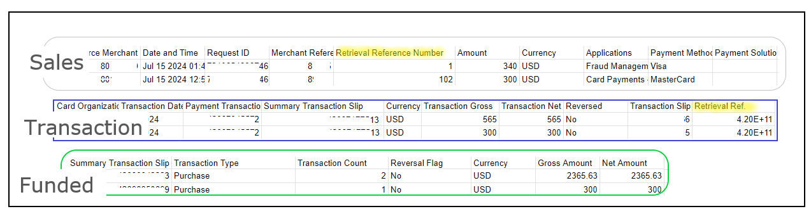
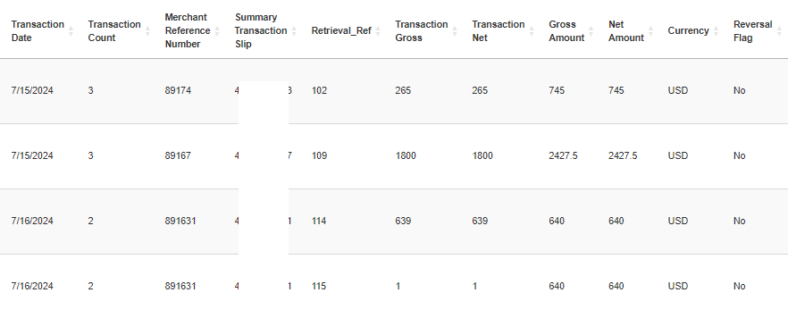
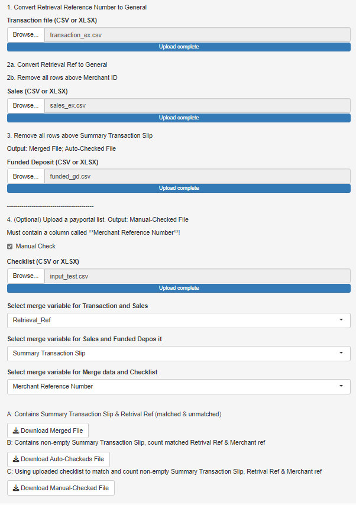

Have you ever get tired of typing functions into vlookup? In this post, we will use tidyverse in R to modify, combine, search, and merge several datasets. We will also create a shiny app allowing users to download the organized data.
Background & challenges
Recently, we reviewed our operational costs and realized that a significant portion was going toward credit card processing fees. After some thorough research and negotiation, we secured a better deal with a new merchant service provider. This switch saved us about $1,500 USD per month, and we also qualified for next-day funding—a major win for our business.
However, our bookkeeper quickly spotted an issue: the new provider’s reporting system was much less straightforward. Unlike our previous provider, which offered a master report with detailed order and funding information, the new service splits this data into three separate reports: Sales, Transaction, and Funded. To make matters worse, some data points, like order details, are labeled differently across the reports (e.g., order.ifo in Sales versus order_detail in Transaction). Additionally, a single order could have multiple funding references, making it a headache to track everything accurately.

Different column names and multiple funded entries for one order
Actions
To fully benefit from the cost savings and stick with the new provider, I decided to tackle this problem head-on using R and Shiny.
One of our goals was to create a master statement with all the action organized in one report as below. To do this, the steps are as below:
We first re-organized the raw report by renaming the column names.
Skipped the data where it is empty or contains not useful information.
Data merge based on the same column names.

Desired master report
Expand for Code
library(shiny)# identify columns appear in both data setsrenderUI({ var_names <-intersect(names(data_a()), names(data_b()))selectInput("var_ab", "Select merge variable for Transaction and Sales", choices = var_names) })
# merge data merged_data <-reactive({req(data_a(), data_b(), data_c(), input$var_ab, input$var_bc) temp_ab <- dplyr::full_join(data_a(), data_b(), by = input$var_ab)unique(dplyr::full_join(temp_ab, data_c(), by = input$var_bc)) })
I also wanted to save time for our bookkeeper as they often need to cross-check the internal documents. This step takes time to find the correct range of the data, and input Vlookup functions before finding and labeling the matches in Excel. To streamline the process and to reduce the manual input errors, I replicated this function in the app (full code as below and on github).
The output result is shown below. This example shows that the order 891631 with two different retrieval references were received, the transactions were successful ,and the amount was deposited into the account. These records (114,115) also appeared in the uploaded internal file.
After the data merge is done, the files are ready to download to the local drive by pressing the Download buttons. This customized shiny app allows our accounting staff to run and download the report anytime/anywhere.

By developing a custom solution, I was able to streamline the reporting process, merge the data consistently, and keep our operations running smoothly—all while cutting down on expenses.